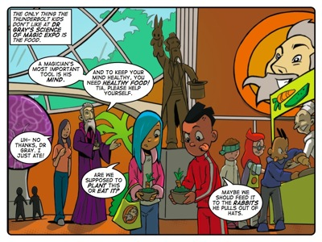
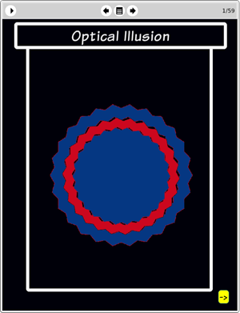

Story: The Illusionist
Theme: Checking your assumptions.
Synopsis
The Thunderbolt Kids attend Dr Gray’s ‘Science of Magic’ expo. They like the exhibits but not the salad-based food they are given for lunch. Dr Gray shows them a few optical illusions and explains how they work. He explains that such illusions use our assumptions to trick the eye and that they can be beaten by careful scrutiny, measurement and the desire to look below the surface of things.
When the kids start getting sick, Tia suspects that there may have been something wrong with the food they ate for lunch. But the arrogant Dr Gray refuses to believe there could have been anything wrong with his food. Even though he is ready to preach to the kids about avoiding faulty assumptions, he is too arrogant to see the facts and he falsely attributes the kids nausea to a variety of random causes. Until he gets sick himself, that is.
The story uses optical illusions to demonstrate the folly of believing everything we see, no matter how strange, without questioning. It also uses the plot’s culinary events to further demonstrate the foolishness of clinging to assumptions despite the testimony of our senses. Dr Gray refuses to even countenance the possibility of his food being tainted because he consider himself immune to making false assumptions. This makes him dismiss Tia’s argument with increasingly silly points until his own nausea silences him. The tale shows your learners how science can debunk ‘magic’ and that rationality can trump any attempt to deceive us.
Activity
This activity challenges learners to analyse a series of optical illusions related to two-dimensional measurements. In each case we ask them to measure parts of the illusion.
The purpose of the activity is to encourage learners not to be passive when analysing a problem. Rather than examining something only with their eyes they should not hesitate to pick up a ruler, a compass or any other tool that helps them measure and record data that they can then analyse objectively, both in and out of context.
In doing this activity we want learners to learn the habit of questioning their assumptions on a scientific level. Rather than believing every unusual thing that they see or hear, they should realise that scientific investigation is open to them at any time. And that it is far more accessible to them than it might seem. It takes little effort to use a ruler or a scale or any measuring tool to take measurements. And yet this kind of active engagement with the world has an enormously positive effect on their cognitive faculties.

The eToys project: Optical
illusionIn this project Farrah shows learners how to construct several optical illusions in eToys. In creating these illusions rather than simply seeing them in LAMS or on a worksheet, learners can gain a much richer understanding of how optical illusions work. The intention underpinning this project is to reinforce the idea that our intuitive mental representations do not always match the world outside of our minds, and that to be effective thinkers we need to test our mental representations.